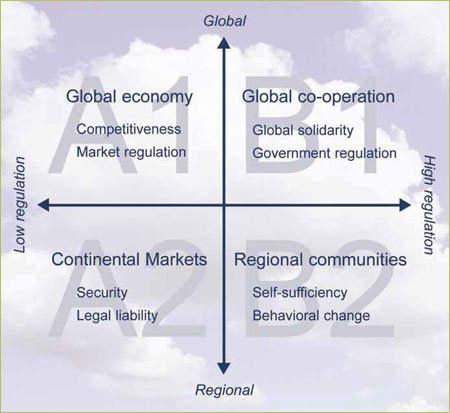
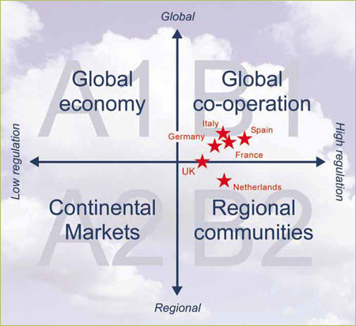
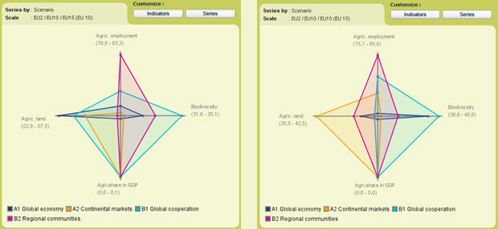

Often mentioned values in Europe are for instance solidarity and tolerance.
However, the European value map does not show a homogeneous picture. Two groups
of countries are clearly recognizable, correlated to the wealth levels. In Western
and Northern Europe, there is an emphasis on secular values and self-expression.
In Eastern Europe, the societies emphasize survival values: hard work, economical
and physical security.
The United States are often seen as the frontrunner in modernization. However,
the US have a more traditional value system than any other advanced industrial
society. The Scandinavian people and the Dutch have advanced the furthest in
the direction of cultural modernization and post-materialism. When it's true
that their trajectories will be followed by other member states, Europeans do
not have to look over the ocean, but to the North to see their future. (source:
Atlas of European Values, Tilburg University, 2005).
Values and scenarios

Figure 1 - prevailing values and steering philosophies
for the baseline scenarios
The scenarios can be associated with prevailing values and steering philosophies.
Those who rate performance and efficiency highly are more likely to prefer market
regulation and free trade. Those who consider equity and world peace to be the
highest goals are more likely to support strong -regional or international-
governance.
In six countries, citizens have been questioned on their favorite scenario and
accompanying values. As many as 75% of the surveyed Europeans feel more associated
with the equity world views (i.e. the B1 and B2 scenario). In this group of
countries, the UK is the most liberal oriented.

Figure 2 - Scenario and world view preference in six
countries. Between the countries there is much overlap. Adapted from Verhue
and Adriaansen, Waarden en wereldbeelden in Nederland en Europa, 2005.
This world view preference can be associated with the results of a survey on
CAP preferences (Eurobarometer 276, TNS opinion & social, 2007):
- Northern and Western Europe with its secular, post-material orientation
prefers a CAP aimed at environment, sustainable production, animal welfare
and product labeling. These preferences are strongly connected with the Global
Cooperation Scenario.
- Eastern Europe, with an orientation on survival values, chooses a CAP for
the protection of family-type farms and the stabilization of the agricultural
market. These preferences are partly connected with the Continental Markets
scenario. Aren't these ideas similar to the ideas of the EU-6 in the year
1957, when signing the Treaty of Rome?
- Possibly a third group of countries can be distinguished, who would like
to give attention to the liveability of the rural areas and have a preference
for autarky. This can for instance be seen in France. This preference leads
to a conservative CAP position.
Favorable scenarios for West and East

Figure 3 - Indicators for 2030, representing some preferences
in the EU15 en the EU10.
Scenario's can not be chosen. However, different parts of Europe have their own
favorite scenario:
- In Northern and Western Europe (left picture) the environment and the nature
are developing in a positive way in the Global Cooperation scenario. The biodiversity
increases and the livestock density decreases. This leads to a reduction of
large nitrogen surpluses, which are currently present in regional hotspots
in for instance The Netherlands, Belgium and Bretagne).
- In Eastern Europe (right picture) the agricultural employment and the agri
share in GDP will decrease in all scenarios. In the regionalized scenarios
(A2 and B2) this process is slowed down to a certain extent, under the influence
of an relative stable CAP.
Values and policies
There is a large similarity between societal values, policy preferences and scenario results. This is for instance relevant for the upcoming discussion on the CAP reform.
Viewpoints on a future CAP will differ between countries as well as within countries. Given the observed values and preferences it might however be expected that a few group of countries will take clearly different positions. These positions will not change easily, since they are firmly rooted in the national societal values.
An agreement on larger policy changes might come within reach by looking to the
longer term future. In what way can be responded to the opportunities and threats
in the next 30 years?